GitHub in Databricks
Aims
Many of the principles of working in a reproducible way and using GitHub also apply when we use GitHub in UDAL and Databricks. We will go through the practicalities of connecting to and using your GitHub account in Databricks.

Create a Personal Access Token
First, we need to create a personal access token for our GitHub account.
In GitHub
Go to your GitHub account.
- Click on your profile photo and go to settings.

- Scroll down to Developer Settings. For me this was the bottom option in the left pane so keep scrolling!

- Click the Personal Access Tokens tab on the left and then Tokens (Classic).

- Click Generate New Token, choose the (Classic) option if offered that choice.
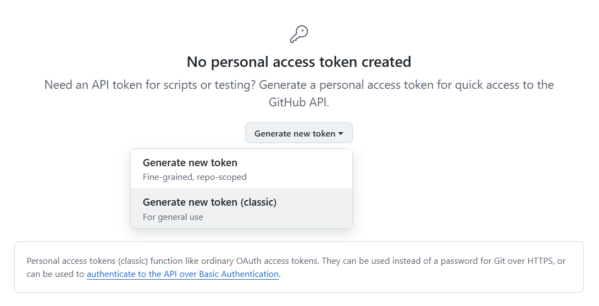
- Enter a name for your token. Help yourself out here and give it a sensible name. Give the token all the repo scope and, if you use GitHub actions, also select the workflow scope.
Note: although you can set your token to have no expiry date, for security purposes, it is recommended that you give your token an expiry date.
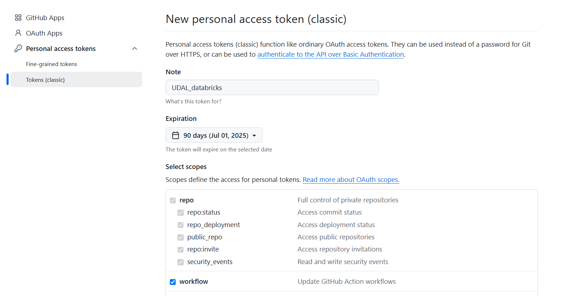
- Click Generate Token.
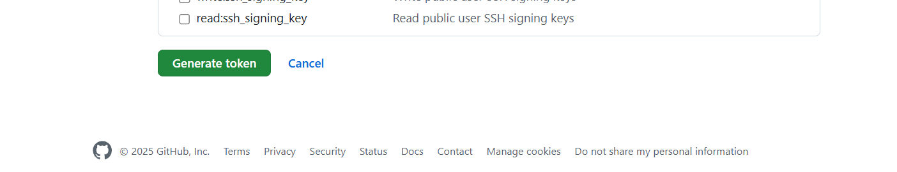
An access token should appear (and you will also get an email to notify you that it has been created).
Note: Once you navigate away from this page, the token will disappear and never come back again, so make sure you copy it to the clipboard.

In Databricks
Within Databricks (once you’ve logged into UDAL and authenticated yourself as many times as it has deemed necessary today):
Connecting with your token
- Click on your profile in the top right and then Settings.
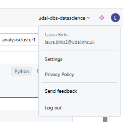
- Then click Linked Accounts.
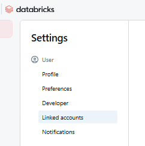
- Populate the form with GitHub as the Git Provider and your own user name. This is where you can paste your Personal Access Token.
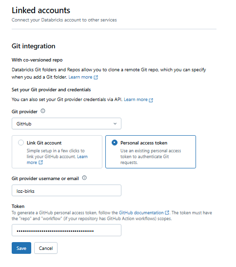
Remember: you can’t copy and paste from outside UDAL.

Working with repos
Creating a repo reminder
- If you do not already have a repo you want to clone, you can create one on GitHub. Feel free to use the SE github template which will initialise a repo with a gitignore, SOP folder and template, and README template with some key reporting info for you to easily edit.
Remember to create your repo in the nhsengland area, not your personal GitHub, otherwise when you transfer it you will lose your admin privileges! You should also add the South East D&A Team and the everyone team to the permissions.

Now that you have a repo to clone.
Cloning a repo
- In your Home (personal) area of Databricks, click Create and then Git Folder.

or go via the big New button in the top left.
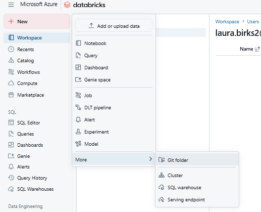
- Copy the repo URL into this box and give your folder a name.
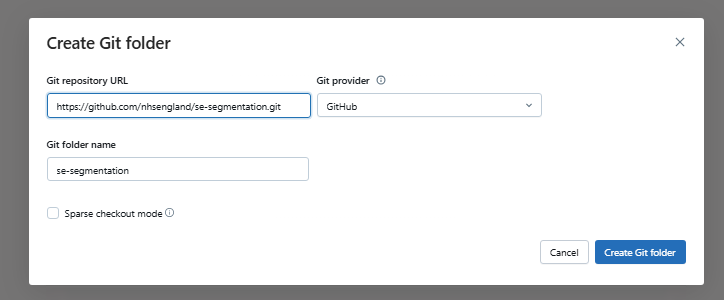
You can get the repo URL from GitHub. Navigate to the repo and click the big <>Code button.

When you’ve done, it should look something like this:
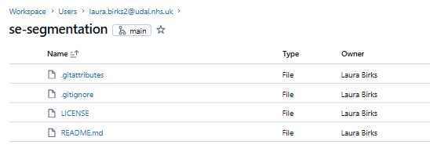
You are now ✨Connected✨
Maintaining your repo
The Git Window
Click on the branch name to open the Git window.

From here you can manage branches, commits, and everything else that you might want to do. You can also open the repo in GitHub from this pane.

Pull changes to the repository
Make sure you get the latest version of the repo before you begin using it. Within the Git window, click Pull in the top right corner. Confirm that you’re happy to pull changes.
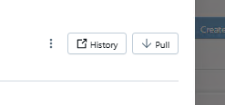
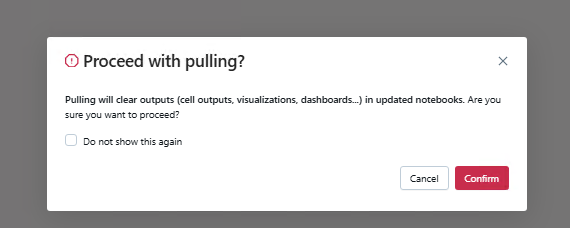
Create a branch
Creating a branch is as simple as selecting Create Branch in the Git window and giving it a name. You can now work from this new branch.
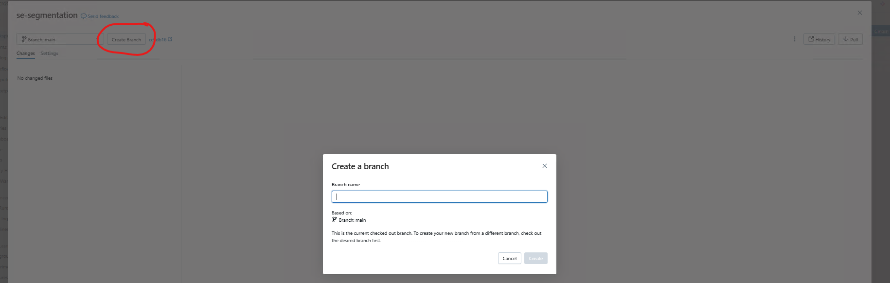
You can see which branch you are working from in the repository.
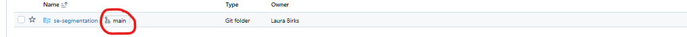
Remember to only make changes outside of the main branch. Only fully complete and QA’d code should be on the main branch.
Push changes
Once you’ve made any changes, open up the Git window. Any files which have been changed will appear on the left with the changes on the right. Select which changes to commit and add any commit messages before hitting Commit & Push. Notice that the Databricks integration pushes commits automatically.
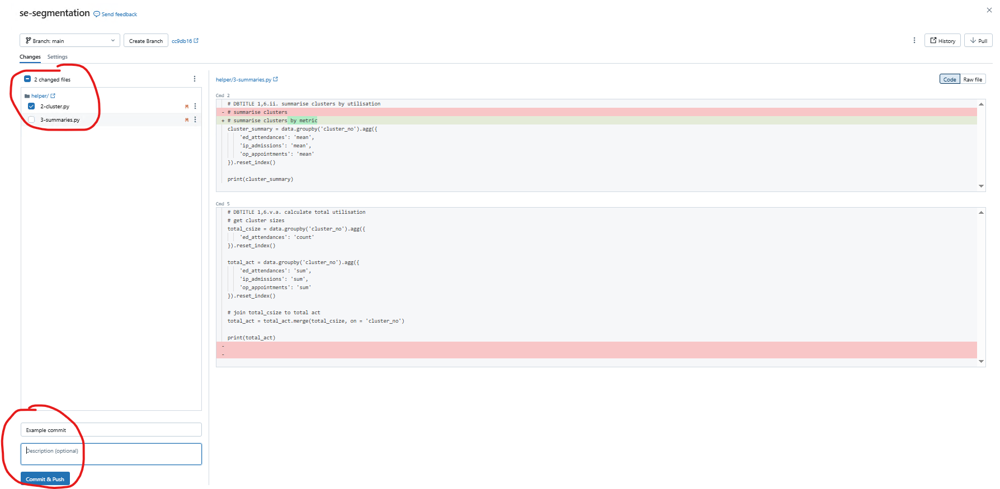
Remember that you can roll back commits, so feel free to stage your commits (make multiple smaller commits) to make it easier to roll back only what you need to.
Pull requests can be handled and old branches deleted in the normal way on GitHub.
You can assign your QA’er to the pull request to perform the QA and make the final merge.
The gitignore
Any files that you want to ignore can be added to the gitignore using the relative file path.